This Month in Rust GameDev #39 - October 2022
Welcome to the 39th issue of the Rust GameDev Workgroup's monthly newsletter. Rust is a systems language pursuing the trifecta: safety, concurrency, and speed. These goals are well-aligned with game development. We hope to build an inviting ecosystem for anyone wishing to use Rust in their development process! Want to get involved? Join the Rust GameDev working group!
You can follow the newsletter creation process by watching the coordination issues. Want something mentioned in the next newsletter? Send us a pull request. Feel free to send PRs about your own projects!
- Announcements
- Game Updates
- Engine Updates
- Learning Material Updates
- Tooling Updates
- Library Updates
- Other News
- Discussions
- Requests for Contribution
Announcements
Game Development in Rust Discord
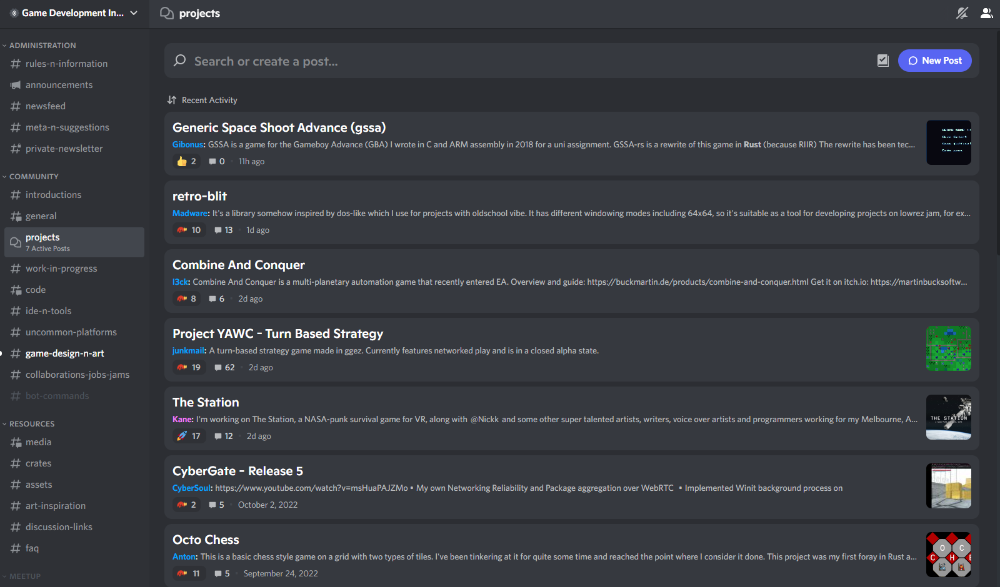
The 'Game Development in Rust' Discord server now has a #projects forum, where you can share updates on what you've been working on.
Game Updates
miam
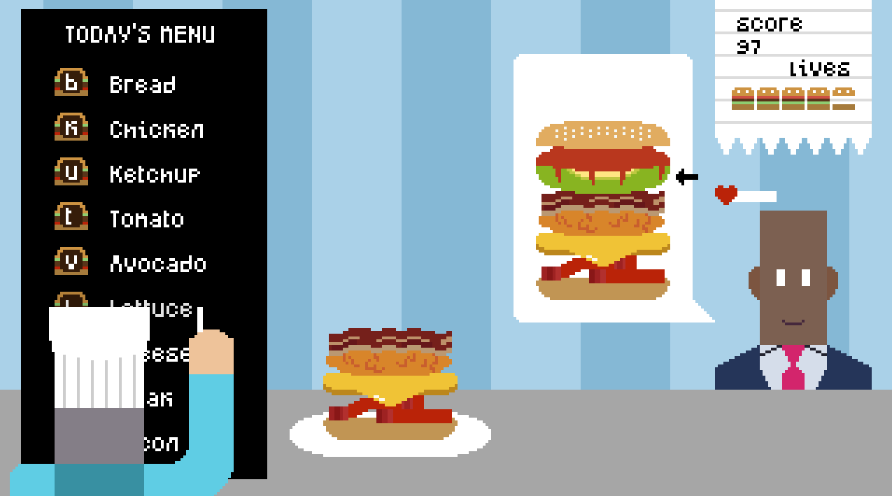
miam (GitHub) by yopox, on100balec, and hadri is a cooking game made for the Ludum Dare 51. "miam" is the French interjection for "yum".
The theme of the game jam was "Every 10 seconds". Here instead of having 10 seconds to make a burger, the chef is really indecisive and comes to change the menu every 10 seconds.
The game was built using Bevy 0.8 with bevy_game_template to save precious time when starting the game jam. bevy_tweening was also really useful to polish the game.
The game was ranked 120th overall and 94th for audio out of 1240 jam entries.
Discussions: Submission page
Jumpy
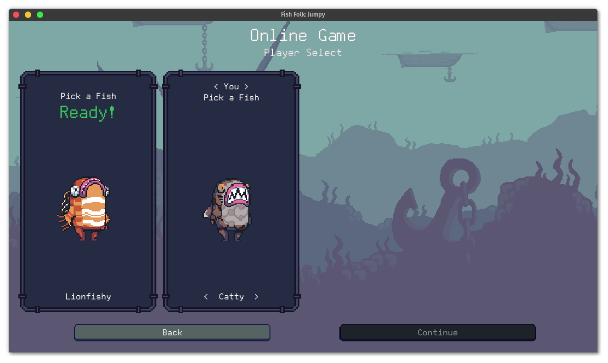 Online Game Fish Selection Screen
Jumpy (GitHub, Discord, Twitter) by Spicy Lobster is a pixel-style, tactical 2D shooter with a fishy theme.
In the last month, the devs started rewriting Jumpy to use the Bevy game engine. Massive progress has been made, establishing foundational features such as input mapping, UI, and localization, along with the addition of a few major features:
- Network play, complete with a matchmaking server for joining public games online.
- A scripting engine using TypeScript/JavaScript powered by
bevy_mod_js_scripting. - A revamped map editor that renders the actual game in the viewport. This lets you switch back and forth between editing and playing, and has the potential for multiplayer map editing in the future.
The physics have been ported from the old version of the game with the basic gameplay and the sword item nearly finished. The next tasks include porting some of the old items to the new scripting system and finishing off the map editor's editing functionality.
CyberGate
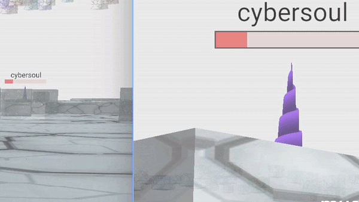 The health bar that is closer updates more frequently
CyberGate (YouTube, Discord) by CyberSoul is an attempt to use artificial intelligence to build diverse universe experiences with strange creatures and procedural gameplay styles.
Recent updates:
- Constructed powerful and extremely fast synchronization for states:
- Able to Extract and Merge partial changes of components and global states.
- Restrict visibility, if the state is conditionally decided to be private.
- Limit the frequency of these state updates based on object priority.
- Big improvement of the organization of the networking systems
- Improved timers in 70 places, resulting in higher performance and flexibility
- Better health bars
- Several minor game content fixes
Join the Discord server to participate in upcoming Phase 6.0!
Digital Extinction
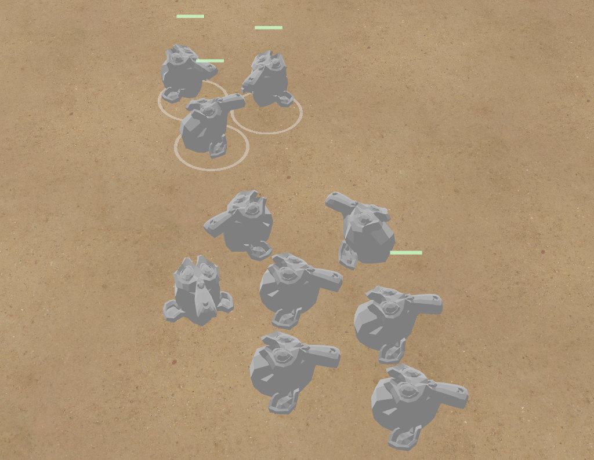 selection circles & health bars in Digital Extinction
Digital Extinction (GitHub, Discord, Reddit) by @Indy2222 is a 3D real-time strategy game made with Bevy.
The game repository was opened a month ago under the GPLv3 license. Here is the
summary of the changes since the opening of the repository. It consists of
commit range f23d51e..ffd5987 (2022-10-09–2022-11-03). There were 50
non-merge commits in total, with the most notable improvements below:
- Object & map bounds repulsion was added.
- Terrain got a texture.
- Select all (CTRL+A) and select all visible (CTRL+Shift+A) functionality was introduced.
- Circle markers below selected objects are now displayed.
- Drag selection was implemented.
- Simple health bars were introduced.
A more detailed update summary is available here.
Turn-based strategy game (ThousandthStar's devlog)
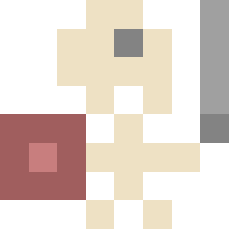
ThousandthStar (Github) is creating a simple turn-based strategy game using the Bevy game engine. It's a small side project he's been building in his spare time.
The game aims to be a cross between Chess and the game Clash Mini. Players move their troops around the board and try to get them to their opponent's side. The game is far from playable, but here is some of the progress that has been done:
- Server and client troop information exchange through packets.
- Threads to allow for multiple games to run at the same time.
- Tile selection appears when troops are clicked.
More features are currently under development:
- Troop movement.
- Troop attacks.
The game uses an extremely simple 8x pixel art style. The palette is Paper Pixels with some extra colors.
Discussions: /r/rust_gamedev
vetovoima
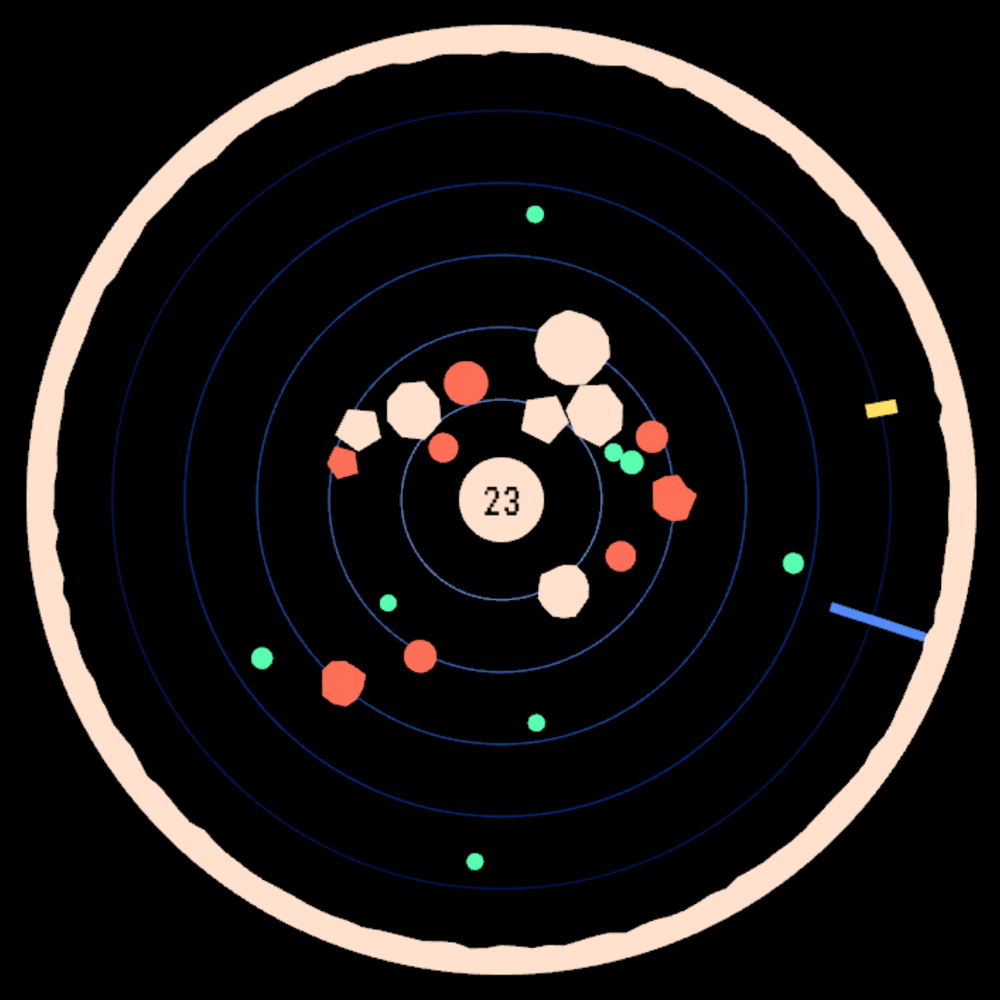
vetovoima by @MatiasKlemola is an arcade game where you control gravity.
This month, the origin story of vetovoima was released on the Valuemotive blog. In the story, an abstract idea turns into an arcade game, which eventually makes it to RustConf 2022!
Engine Updates
Fyrox
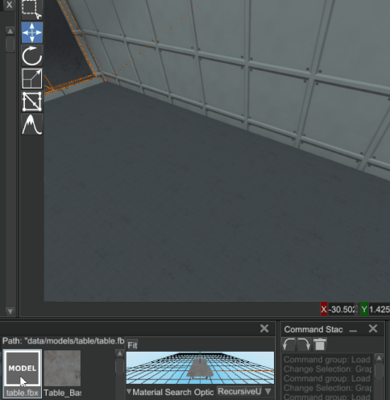
Fyrox (Discord, Twitter) is a game engine that aims to be easy to use and provide a large set of out-of-the-box features. In October it hit version 0.28 which added new functionality and improved existing:
- Asset preview during instantiation (see the gif above).
- Improved and deterministic script processing.
- Scripts are now compatible with saved games.
- Major text box widget improvements.
- Prefab property inheritance via reflection.
- Automatic node handle mapping via reflection.
- Sprite sheet animation support.
- Multi-borrow context to solve borrowing issues.
- Editor now stores list of recently used files, scene settings, and more.
- World Viewer now allows you to change a node type.
- Major book improvements.
- See the full list of changes in the blog post.
miniquad
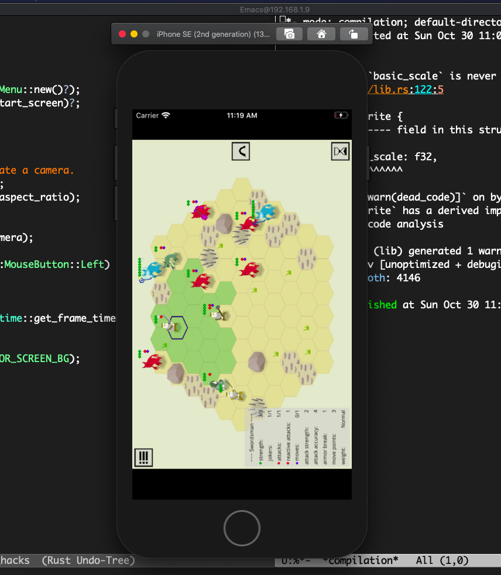 zemeroth on the iOS simulator
miniquad is a pure Rust, cross-platform graphics library.
This month was about improving miniquad on mobile experience.
On iOS, miniquad got an article on setting up the developer environment, getting provisioning files, etc.
TL;DR: even on old Macs/Xcode, mini/macroquad-based games can be built with
cargo build --target aarch64-apple-ios && ios_deploy
No iOS-specific code required and no need to deal with Xcode projects.
For Android, miniquad got a writeup on Java interop, AAB bundles and other Android specific internals.
Learning Material Updates
WGPU Wiki
@wumpf updated the wgpu wiki to include an explanation of some of the fundamental wgpu/WebGPU concepts.
It includes info diagrams on how RenderPipeline connects
to other resources as well as an overview on the data structures
involved in rendering a frame.
Learn Wgpu Updated
The Learn Wgpu tutorial has been updated to 0.14!
The API changes from 0.13 are pretty simple - check them out here
wgpu-openxr-example
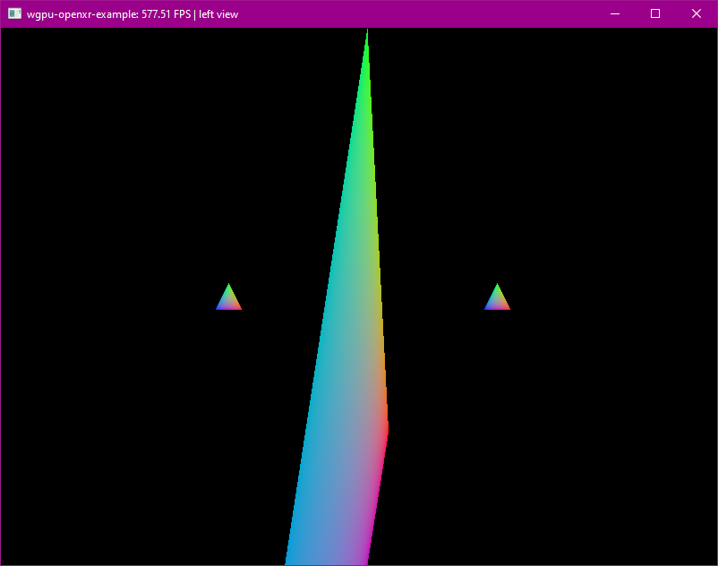
wgpu-openxr-example is an example of how to wire up
wgpu (Vulkan-only) to OpenXR by @philpax
(Dims). It displays a triangle in the centre and a triangle per hand,
and renders to both a window and your XR headset with both head and headset tracking.
It has multiple modes of operation, including disabling XR integration entirely at compile-time with a Cargo feature, to make it easy to understand each step in the process of integrating OpenXR.
Tooling Updates
Blackjack
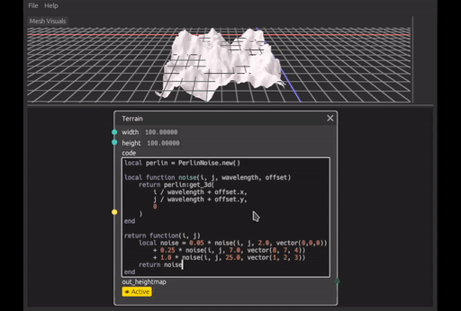
Blackjack by @setzer22 is a procedural modeling application made in Rust, using rend3, wgpu, and egui. It follows the steps of applications like Houdini, or Blender's geometry nodes project and provides a node-based environment to compose procedural recipes to create 3d models.
The past couple months have been busy for Blackjack, the work continues with a focus of filling in all the missing bits to enable usage in more indie gamedev workflows.
Some of the changes include:
- New nodes for geometry editing, like: Resample curve, Point cloud, Polygon, Line from points or Edit geometry.
- A new type of mesh, the height map with its set of nodes.
- A way to import OBJ meshes into procedural graphs.
- Bug fixes in extrude and bevel nodes, making them more robust and handle more kinds of meshes.
- A new DragValue widget offering more precise control when tweaking parameters.
- Smoother camera controls and various editor UX improvements.
Blackjack has no release notes yet, but make sure to check out the recently merged PRs (1, 2, 3) for a more in-depth summary of the changes and lots of animated gifs.
On the social side, a first blog post in a series was published on Ko-fi showing a real gamedev use case using Blackjack and the Godot engine together to implement a racing game. Additionally, Blackjack now has a Twitter account. Consider following both for more frequent updates!
Currently, development is focused on implementing the next major feature: Gizmos. There are some initial results, and the full PR for it is expected to land sometime during November.
Graphite

Graphite (website, GitHub, Discord, Twitter) is a free, in-development raster and vector 2D graphics editor that will be based around a Rust-powered node graph compositing engine.
September and October's sprint 19 focused on major new features and improvements to make Graphite more useful and usable.
- Like magic: Stable Diffusion, the open source AI image generator, is integrated into Graphite as the Imaginate tool. It provides an innovative non-destructive workflow to interactively co-create art with a skilled AI.
- Right on the nodes: Graphite's node graph engine is finally up and running, now integrated with a node-powered tool that desaturates the underlying artwork. A graph panel will be ready shortly. Just in time for Nodevember!
- With flying colors: The color picker menu gains hex/RGB/HSV controls. Gradients get unlimited color transitions. The Eyedropper tool is rewritten to sample pixels from the viewport. The editor UI gets a color scheme design refresh for improved clarity, plus helpful new input widgets.
Open the Graphite editor in your browser to give it a try and share your creations with #MadeWithGraphite on Twitter.
Library Updates
glutin
glutin (GitHub, docs.rs) by @kchibisov (rust-windowing) is a crate that is well known for being an OpenGL platform initialization on top of winit.
With glutin 0.30, this is no longer the case. The crate was
rewritten from scratch and redesigned around raw-window-handle, so
you don't need winit anymore in this equation and it could be used with
whatever windowing library you prefer, like smithay-client-toolkit for
pure Wayland clients.
Given everything is based on raw-window-handle the crate is more low-level
now and also exposes the underlying platform API like EGL, GLX, and WGL
directly. There's already an interest of using glutin to handle EGL in
projects like Smithay.
Previously with glutin 0.29 everything was based around the single
WindowedContext - while this was convinient for some users and worked on
desktop platforms, that fact was a major pain on Android where the window
gets destroyed over time, but its context could be kept around, or when you
fail to query configuration with supplied parameters leading to chain creating
WindowedContext and causing delays on startup. For example, you can create all
the objects and then fail on setting vsync, forcing you to start over.
None of that is an issue with glutin 0.30.0. The API is now structured around
Display, Context, Surface, and Config, where every object is built from
the Display and has its own role which is close to what you usually can find
in OpenGL native rendering platforms specifications, like EGL.
Unfortunatelly, the new API isn't as easy to bootstrap as it was with old
glutin, especially when you want to use platforms like WGL and GLX.
However, if you're using winit there will be (or is already) a special crate
glutin-winit to handle platform-specific Display creation for you.
To see the new API in action, look at the glutin examples. They should work on desktop platforms and Android (you may even notice that there's no special code for Android at all!).
One note to add, is that iOS is no longer supported, but only due to
lack of maintainers for it. If you rely on iOS support in glutin, the devs
encourage you to help contributing to it upstream, or you'd stuck with glutin
0.29 which won't receive any updates anymore.
For further info, check out the winit matrix room or #winit at libera.chat.
presser
presser (GitHub, docs.rs) by @fu5ha (Embark Studios) is a crate to help you copy things into raw buffers without invoking spooky action at a distance (undefined behavior).
Ever done something like this?
#[derive(Clone, Copy)]
#[repr(C)]
struct MyDataStruct {
a: u8,
b: u32,
}
let my_data = MyDataStruct { a: 0, b: 42 };
// 🚨 MyDataStruct contains 3 padding bytes after `a`, which are
// uninit, therefore getting a slice that includes them is UB!
let my_data_bytes: &[u8] = transmute(&my_data);
// allocate an uninit buffer of some size
let my_buffer: MyBufferType = some_api.alloc_buffer_size(2048);
// 🚨 this is UB for the same reason, these bytes are uninit!*
let buffer_as_bytes: &mut [u8] =
slice::from_raw_parts(my_buffer.ptr(), my_buffer.size());
// 🚨 this is UB because not only are both slices invalid,
// this is not ensuring proper alignment!
buffer_as_bytes.copy_from_slice(my_data_bytes);
presser can help.
// borrow our raw allocation as a presser::Slab, asserting we have
// unique access to it. see the docs for more.
let slab = unsafe { raw_allocation.borrow_as_slab(); }
// now we may safely copy `my_data` into `my_buffer`,
// starting at a minimum offset of 0 into the buffer
let copy_record = presser::copy_to_offset(&my_data, &mut slab, 0)?;
If you're not convinced this is actually an issue, read more in the crate readme. If you're intrigued and want to know more, see the docs.
Hanabi
The Hanabi library (GitHub, docs.rs) is a modern VFX library for the Bevy Game Engine. It focuses on scale to produce stunning visual effects (VFX) in real time, offloading most of the work to the GPU (compute shaders), with minimal CPU intervention. The design is inspired by modern particle systems found in other industry-leading game engines.
This month, Hanabi v0.4.0 was released, adding a 3D cone emitter and some more testing, followed by v0.4.1 providing several bug fixes and support for custom MSAA settings. Both versions target the latest Bevy 0.8 release.
The internal architecture was also updated to decouple particle spawning and update, allowing to update over 6 millions particles in real time with close to zero CPU usage. This new architecture will be available in the upcoming v0.5.0 release as part of the upgrade to the imminent Bevy 0.9 release.
seldom_state
seldom_state by Seldom (Github) is a component-based
state machine plugin for Bevy. It's useful for AI, player state, animation,
and other entities that occupy varying states.
In October, seldom_state recieved its 0.2 and 0.2.1 updates. 0.2 gave Done
and DoneTrigger success and failure variants, and changed states to be
bundles instead of components. 0.2.1 added insert_on_enter
and remove_on_exit methods to the state machine, which let you automatically
add and remove bundles upon state change.
MarpII
MarpII (GitLab, Twitter, Mastodon) by Siebencorgie is a highlevel-ish helper for Vulkan using Ash.
MarpII is the successor to Marp, which was a Rust-y abstraction layer over low-level Vulkan bindings.
The new crate does not focus on wrapping Vulkan into one safe wrapper, but instead provides multiple levels of helpers that should make using it easier. This includes handling resource lifetimes and providing simplifications for common operations.
The main crate provides utilities for robust Vulkan context (instances, devices, etc.) and resource (images, buffers, descriptors etc.) creation. Lately, higher level helpers like a resource managing frame graph and helpers for descriptor creation and command buffer recording joined the project.
Other News
- Other game updates:
- Yomi Hustle is an online turn-based TAS fighter, which is going into open beta on November 10th.
- TheGrimsey is writing a devlog of their experiences with Bevy.
- Tiny Building Game introduced a shader refactoring dev tool.
- Embark is looking for early players for their creative platform.
- R:Vust is a side-scrolling SHMUP.
- Tomb Explorer has a new devlog video.
- Tantan is working on a voxel game.
- Punchy released the first MVP of their scripting engine.
- Bungo Drifter is an infinite voxel city generator.
- Vange-rs added a new style of rendering.
- RainyCloud is an experimental game where you control a cloud.
- Life Code released another devlog for their ecosystem sim.
- Other engine updates:
- Other learning material updates:
- Rustacean Station interviewed Forest Anderson about Veloren, a multiplayer voxel RPG.
- Rukai gave a talk about how they built a frame data website in Rust.
- LittleB0xes started a tutorial series for Macroquad.
- Dan Olson from Treyarch gave a talk on using Rust for game tooling.
- Larry Du made a web game using Bevy.
- Ryosuke wrote about rendering primitive geometry with WGPU.
- PhaestusFox has posted more episodes of their 'Bevy Basics' tutorial series.
- Other tooling updates:
- Modmapper is an interactive map of every Skyrim mod on Nexus Mods.
- LelsersLasers is building 3D cellular automata with WGPU.
- Vismut released version 0.6 of their procedural texturing tool.
- Other library updates:
- psx-sdk-rs is a basic Rust SDK for the PlayStation 1.
- WGPU 0.14 was released.
- gba is a crate for Game Boy Advance development.
- quinn released version 0.9 of their pure-Rust QUIC implementation.
- iyes_loopless 0.8 provides usability improvements for Bevy game loops.
- leafwing_abilities is a library for managing game character abilities.
- dualquat is a library for use in dual quaternion-based physics simulations.
- seed_creator creates random seeds for the WASM4 fantasy console.
- bevy-hikari implements global illumination for Bevy.
- bevy_ecs_tilemap added many new features.
- bevy_mod_mesh_tools provides helper code for working with meshes.
Discussions
- /r/rust_gamedev:
Requests for Contribution
- 'Are We Game Yet?' wants to know about projects/games/resources that aren't listed yet.
- Graphite is looking for contributors to help build the new node graph and 2D rendering systems.
- winit's "difficulty: easy" issues.
- Backroll-rs, a new networking library.
- Embark's open issues (embark.rs).
- wgpu's "help wanted" issues.
- luminance's "low hanging fruit" issues.
- ggez's "good first issue" issues.
- Veloren's "beginner" issues.
- A/B Street's "good first issue" issues.
- Mun's "good first issue" issues.
- SIMple Mechanic's good first issues.
- Bevy's "good first issue" issues.
That's all news for today, thanks for reading!
Want something mentioned in the next newsletter? Send us a pull request.
Also, subscribe to @rust_gamedev on Twitter or /r/rust_gamedev subreddit if you want to receive fresh news!
Discuss this post on: /r/rust_gamedev, Twitter, Discord.